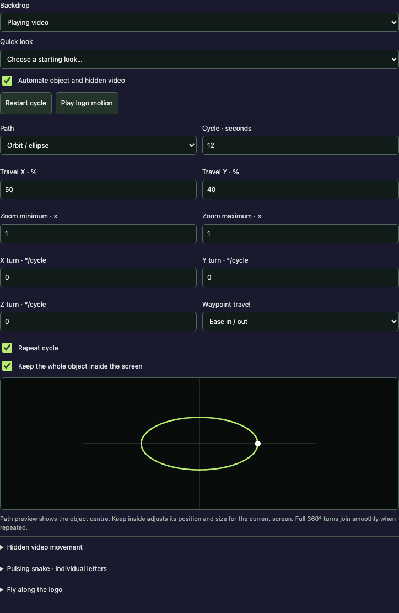
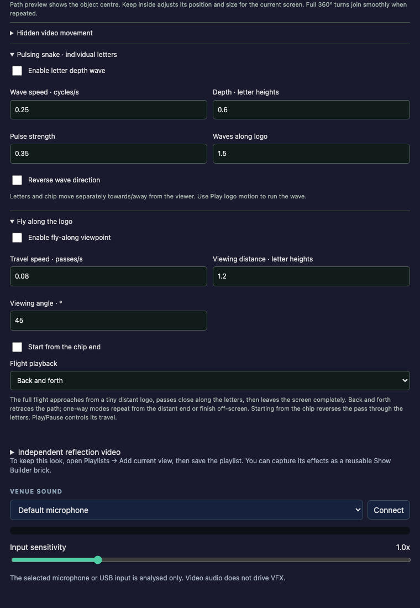

6. Animate and render the logo
Choreograph paths, upright portrait logos, letter waves and complete fly-throughs.
Start with a pose
Choose the logo or text, its finish and reflection video, then set position, size, depth and static rotations. Horizontal, Vertical · top → bottom and Vertical · bottom → top rearrange the logo. Vertical presentations keep the letters and chip upright. These orientations are independent of X/Y/Z rotations and the viewing angle of a fly-along.
In Prepare, Play logo motion runs paths, automatic rotation, snake and flight without starting or stopping the background video. Motion starts paused. Restart cycle returns to its beginning. In Playlists, the playlist transport owns these clocks so the object stays in sync with its cue. The saved-effect audition offers its own temporary video and motion controls.
Paths, zoom and rotations


- Choose a Quick look as a starting point, or enable Automate object and hidden video.
- Pick Still, Bounce, Orbit, Figure-eight or Custom path.
- Set cycle length, horizontal/vertical travel and zoom minimum/maximum.
- Add X/Y/Z turns per cycle. A full 360-degree turn can join smoothly across repeats.
- Choose smooth/eased or even waypoint travel and whether to repeat the cycle.
- Enable Keep inside to fit the whole object within the current frame.
Custom paths allow dragging numbered points and entering each waypoint's time, position, scale and rotations. Use matching first and last poses for a closed repeating route. The path diagram represents the object's centre; Keep inside can also adjust its size/position to retain the complete shape.
Move the hidden reflection source
Hidden video movement moves the film through the reflective environment without requiring the logo to move. Choose a left-to-right pass, right-to-left pass or back-and-forth sweep, then set video size and travel distance in frame widths. Against black, the moving footage is visible only through reflections. Areas beyond the moving source are black.
Pulsing letter snake
Enable letter depth wave. Wave speed sets cycles per second; Depth moves individual letters forward/back; Pulse strength changes the wave's amplitude over time; Waves along logo changes its wavelength. Reverse the wave when desired. The Version1 letters and chip move separately, including in vertical presentations. Press the relevant motion/playlist Play control to run it.
Fly along the wordmark


Enable Fly-along viewpoint. The complete flight starts from a tiny distant mark, approaches close to the letters, moves along the wordmark and leaves the screen. The default 45-degree viewing angle makes the letters recede into the screen; zero degrees restores a straight-on traversal. Viewing distance sets the closest approach. Fly-along intentionally bypasses Keep inside for screen-filling close-ups.
| Flight playback | Behaviour |
|---|---|
| Back and forth | Retraces the full pass and recedes to the distant tiny point before approaching again. |
| One way · repeat | Makes forward passes; each begins again at the distant point after the off-screen departure. |
| One way · once | Makes one pass and holds off-screen. Restart cycle replays it. |
Travel speed is passes per second: 0.08 is a 12.5-second one-way pass, or a 25-second outward/return journey. Start from the chip end reverses the traversal. A normal horizontal flight exits left; the reversed horizontal traversal exits right. Vertical presentations also clear the left edge. Snake and flight can run together.
Check and capture a portrait logo
Use the effect audition's 9:16 frame or choose Record a 9:16 logo video in VFX. In Capture, choose duration and whether to start the motion from its beginning. A reusable logo-render preset records the complete object layer on black and adds the resulting MP4 to the source library. Use an ordinary social Capture format for a complete layered scene instead.